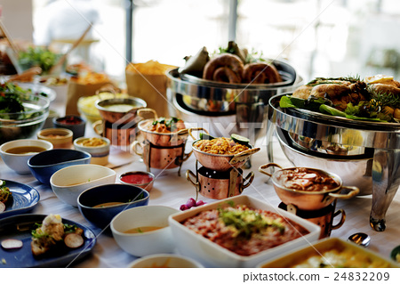

Unique Recipes
Here are some of the dishes that I have handpicked for you.
Here are my top picks for foods that i like (totally not copied from the web and pasted)

"The food doesnt choose the person to eat, it eats and aligns everything in the center" - Sun Tzu